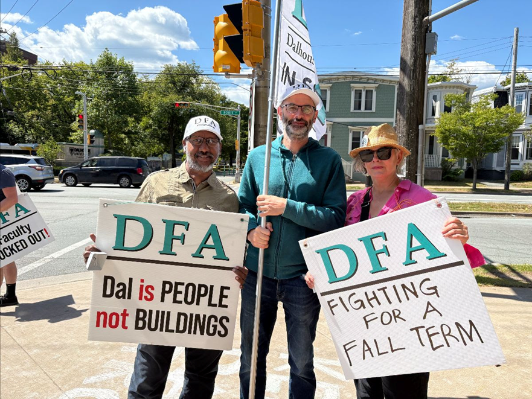
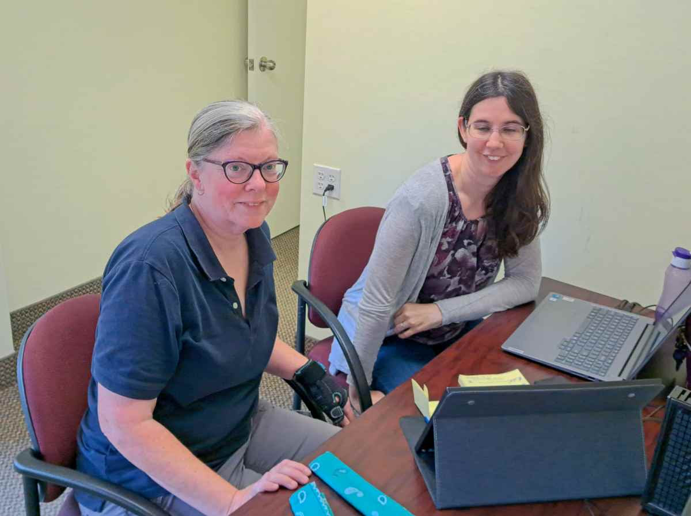
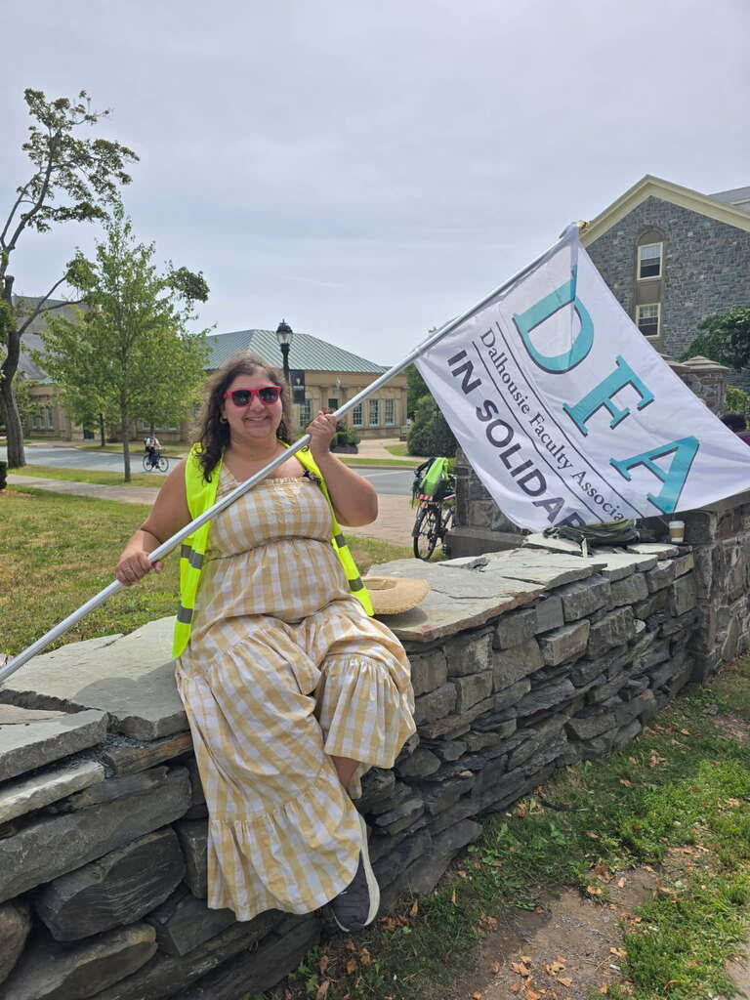

Daily Bulletin #3, August 27
Have an idea for something to cover?


A Week of Silence, a Week of Solidarity
One week ago today, on Wednesday, August 20th, at 9:30 a.m., Dalhousie entered the history books. We thought we’d do a recap of the past seven days, and we noticed a Tale of Two Dalhousies:
For the Board and Administration this was a week of silence and isolation:
- Dalhousie became the first U15 university in Canada to lock out faculty.
- Dalhousie President Kim Brooks became the first president, that we’ve found, to lock faculty out while they were in the middle of voting on the university’s offer. This may, in fact, be a first in Canadian labour history?
- It has also been a week of complete silence:
Silence from the President on the effects her decisions will and have had on students, their families, and the community.
Silence from the Board’s negotiating team. We are ready and willing to do the difficult and necessary work of bargaining. They seem unwilling to work toward a solution.
- All of these decisions are isolating Dalhousie’s “leaders” from the very staff and students that make our university work, and from our local, provincial, national, and international partners.
But for the DFA this has been a week of loud solidarity as we fight to #KeepDalStrong!
- We held our first labour rally in 23 years, attended by members and in solidarity with staff colleagues, students, sibling labour unions, and community members.
- We were loud in our determination to get back to the bargaining table and back to work.
- We’ve made strong statements in the media and on social media, including about our concern for students.
- And of course, we’ve been loud in the streets!
Picket Line Updates
From our Job Action HQ:
IMPORTANT NOTE: On Labour Day (Monday, September 1), picket lines will not operate and alternate duties will not be conducted. Please be reminded that DFA Members receive strike pay for 7 days a week, including weekends and holidays.
The Job Action Committee is hard at work creating new schedules for September, and assigning strike duties that best suit each Member, while also making sure we have enough Members at each picket line and across different job action duties. Please bear with us as we are trying our best to balance these imperatives; we greatly appreciate your patience and understanding. As with August, most duties will be carried out Monday - Friday, 7:30 a.m. - 4:30 p.m., though there may be additional work required on evenings and weekends for some tasks. While most Members will be assigned picket line duties, alternative and/or virtual strike duties will be made available for those Members who are unable to participate in picketing.
Please note that children, other family members, staff colleagues, and anyone interested is always welcome to join us on the picket lines.
DFA members will be expected to complete lockout/strike duties in order to qualify for strike pay.
If you require additional information on strike duties not available in the FAQ, please email 2025.strike.dfa@gmail.com.
News Roundup
President Brooks’ unprecedented lockout and the uncertainty it is creating (one is tempted to say threat it is posing…) to the Fall term have gained significant press coverage in the past week. We wanted to do a partial round-up in case you have been too busy on the line to catch them. Special thanks to our wonderful Communications Officer Catherine Wall for all of her work with the Press, to our many members who have done interviews, and to the students for being so honest about the terrible position the president’s lockout is putting them in.
(Our editors apologize for the lack of fancy design, basic details, or any logical organizing principles to this list. Take it as sarcastic commentary on the lack of design, basic details, or logical organizing principles in the Board’s behaviour.)

Celebrating Librarians
As these bulletins continue, we want to acknowledge the specialized work many of our colleagues are bringing to our job action. Yesterday, we highlighted the work counsellors are doing in the Solidarity Hub, and today we’d like to acknowledge the amazing efforts of our librarian members, brought to our attention by their colleagues!
- Dominic Silvio, DFA President-Elect and Past President, and rally leader extraordinaire
- Julie Marcoux, survey developer, scheduling, data wizard
- Shelley McKibbon, strike headquarters coordinator (Halifax)
- Erin MacPherson, strike headquarters coordinator (Truro)
- Jackie Phinney, communications drafts (Saint John)
- Robin Parker and Melissa Rothfus, drafting instructions for data entry
- and so many more than we have space for here, walking the lines, working on virtual and alt-duties and so much more!

Shout Outs
We received so many replies to our Call for Shout Outs that we’ll have to consider making this a running series! Here are just a few!
- Nadine Ezzeddine and Michel Ladouceur, picket captains for Oxford 12:45 [ed. note: and member and chair, respectively, of our Membership Engagement committee!], for encouraging singing, dancing, and high-energy picketing (and having a loud speaker to play our music!!) **Honk honk**!!!
- Laura deGelleke (Oceanography): She brings nonstop, infectious energy to the line: shouting our message to cars, handing out high fives, making tons of noise, and always smiling.
- Rina Wehbe (Computer Science; pictured): living her best life on the picket line!
Don’t forget to send us more! Click the button below!